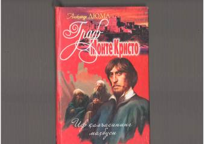

IQEdmon Dantesning adolatsizlikka qarshi kurashi va qasos olish yo'lidagi hayajonli sarguzashtlari.
Ushbu asar jahon adabiyotining durdona asarlaridan biri bo'lib, bosh qahramon Edmon Dantesning hayotiy sinovlari, adolatsizlikka qarshi kurashi va qasos olish yo'lidagi sarguzashtlarini hikoya qiladi. Kitob insoniy tuyg'ular, orzular va qiyinchiliklar qarshisida matonatli bo'lish haqida so'z yuritadi.